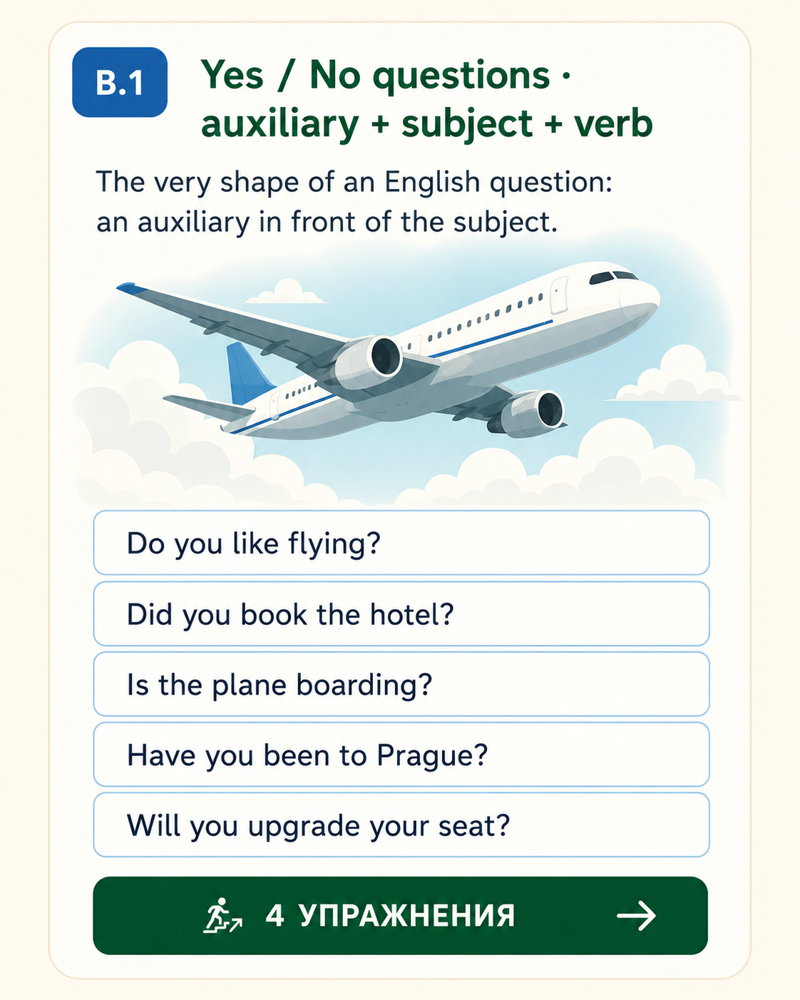
The very shape of an English question: an auxiliary in front of the subject. Which auxiliary → depends on the tense.
Read the sentence — pick the auxiliary that matches the tense. Airport, hotel, taxi vocabulary throughout.
Click words from the bank in the correct order. Every prompt tells you which tense. Reset per line if needed.
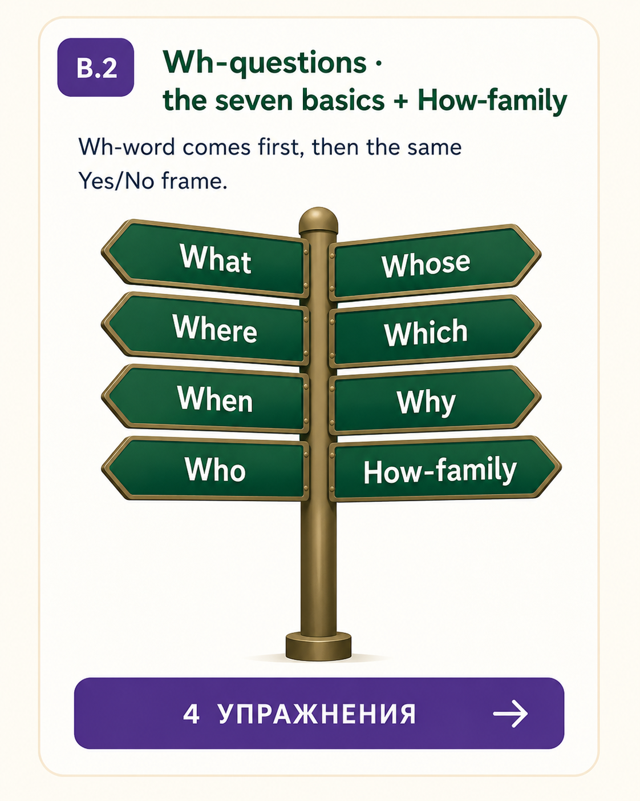
Wh-word comes first, then the same Yes/No frame (auxiliary + subject + verb).
How-family — measure / manner:
Read the answer / context — decide which Wh-word opens the question. Some sentences invite How much / How many / How long.
Same builder as B.1.b — but now with Wh-words in front.
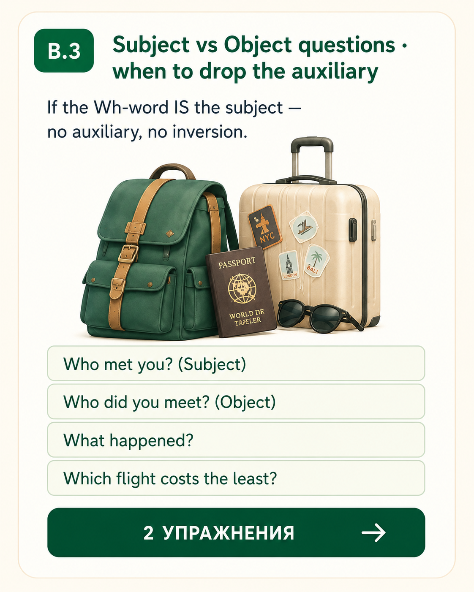
If the Wh-word IS the subject — no auxiliary, no inversion. Just Wh + verb.
Same pattern with What, Which, How many:
Read the answer under each question. Pick the version that fits the subject/object rule.
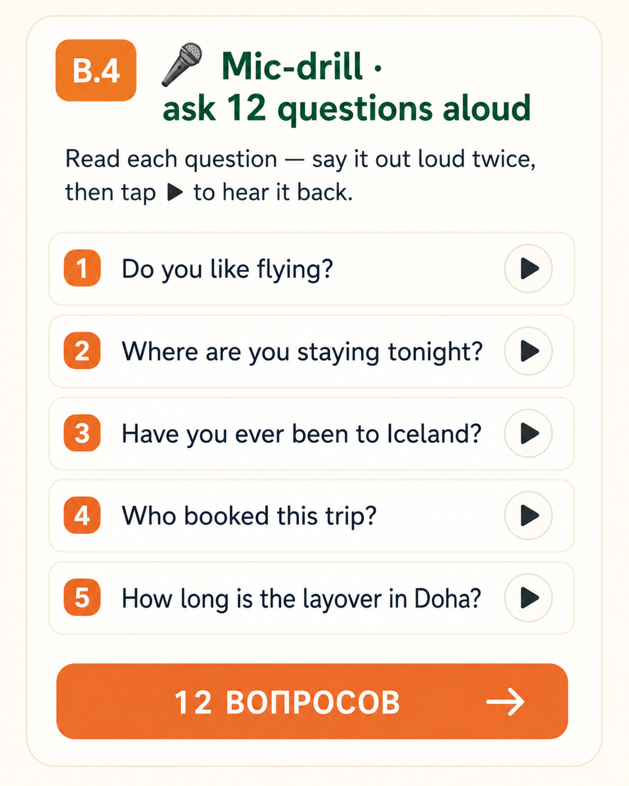
Read each question — say it out loud twice, then tap ▶ to hear it back. Focus on falling intonation on Wh-questions and rising intonation on Yes/No.
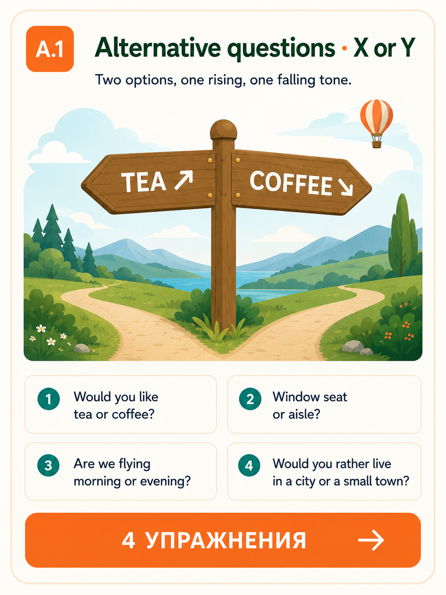
Same frame as a Yes/No question, but with or offering two options. Intonation: rise on X, fall on Y.
Pick the version that sounds like a real alternative question — not a Yes/No.
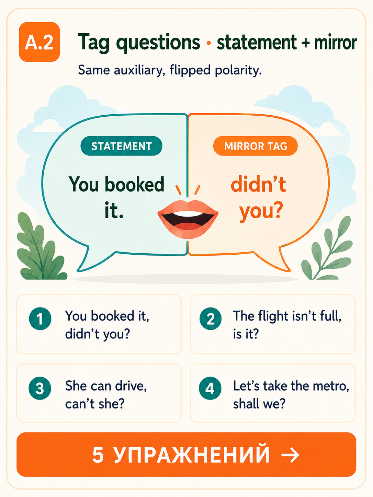
A tag question is a mini-question at the end of a statement, asking for confirmation. The auxiliary in the tag mirrors the statement, but flips polarity.
Which auxiliary to pick? Repeat the auxiliary of the statement:
Read the statement — pick the tag that mirrors auxiliary and flips polarity.
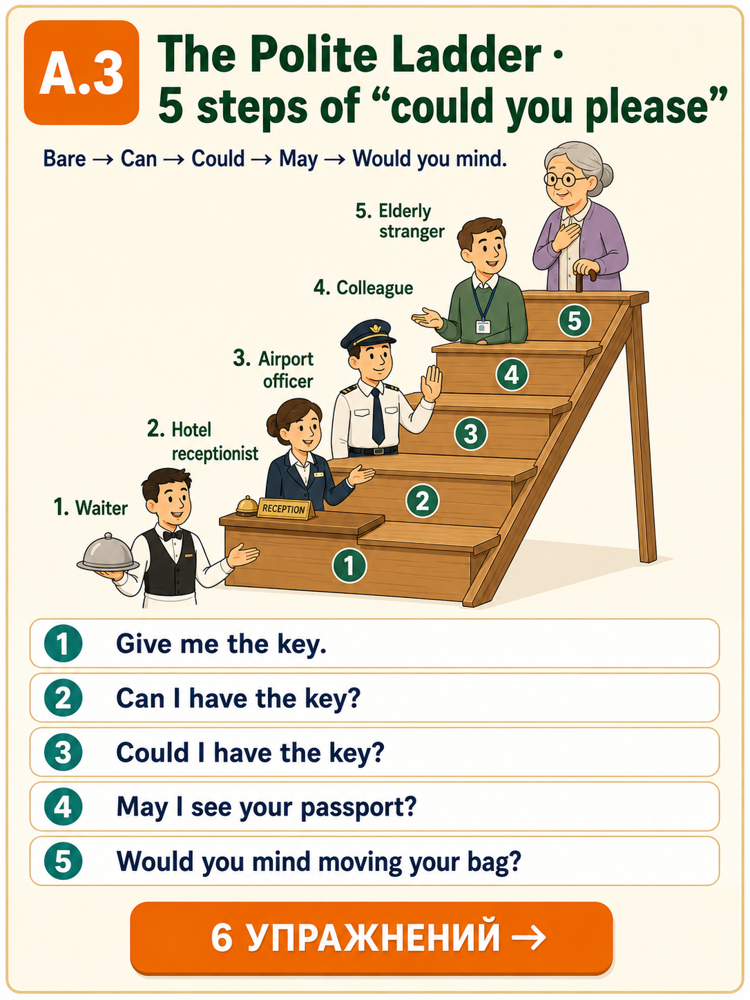
Native English builds politeness in visible steps. Learn the ladder — climb it depending on who you're talking to and how much you're asking.
For each context, pick the most appropriate polite version.
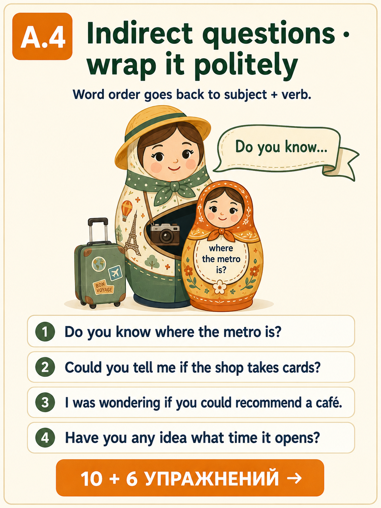
Direct: Where is the bus stop? → Indirect: Do you know where the bus stop is?
What changes:
Choose the correctly-formed indirect version. Watch the word order after «where / when / if».
Same builder as in Basics — click the words in the right order. Inside «Do you know», «Could you tell me» — no inversion.
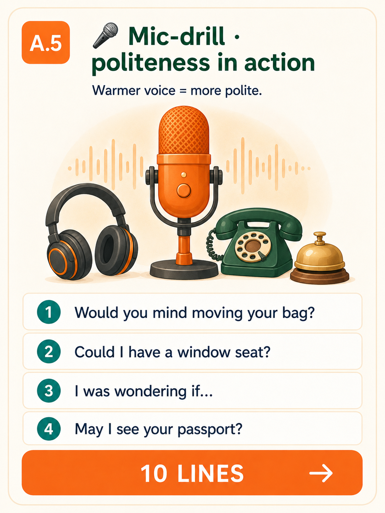
Say each line aloud twice — once as direct, once as polite. Then tap ▶ to compare with a native voice. Notice the smoother musical shape of the polite versions.
English is strict about word order. Every sentence is a train — вагончики стоят в одном порядке.
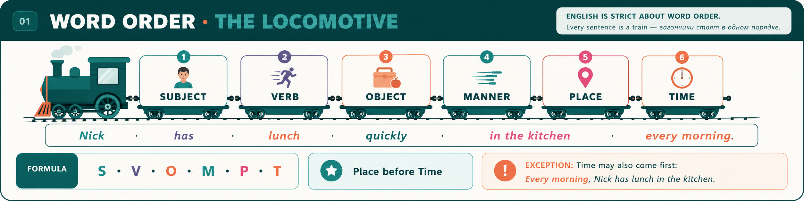
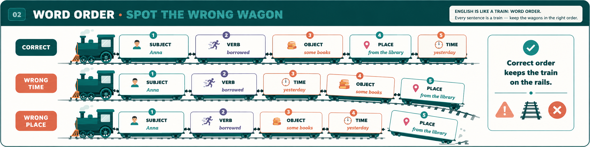
Read each sentence — one has a wagon out of order. Pick the correct version.
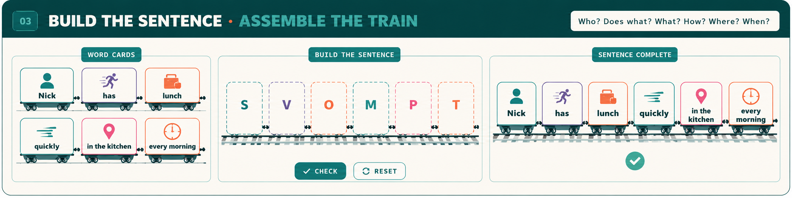
Click the wagons in the correct order. Every prompt tells you the tense.
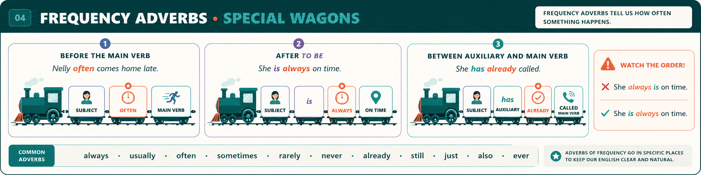
These are special wagons — they NEVER sit in the SVOMPT chain. They have their own rule.
The full family:
Pick the version with the adverb in the right slot.
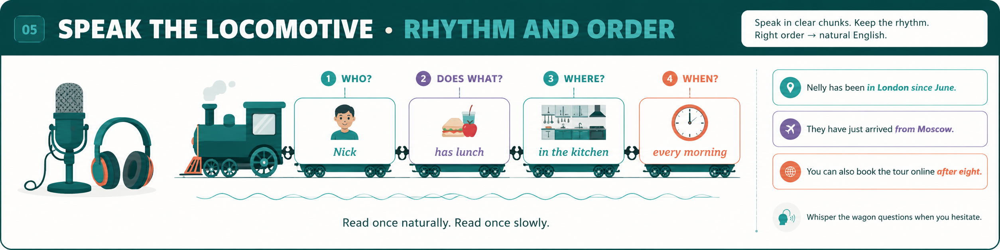
Every line is a full SVOMPT sentence — read it once naturally, once slowly. Tap ▶ to hear the model.
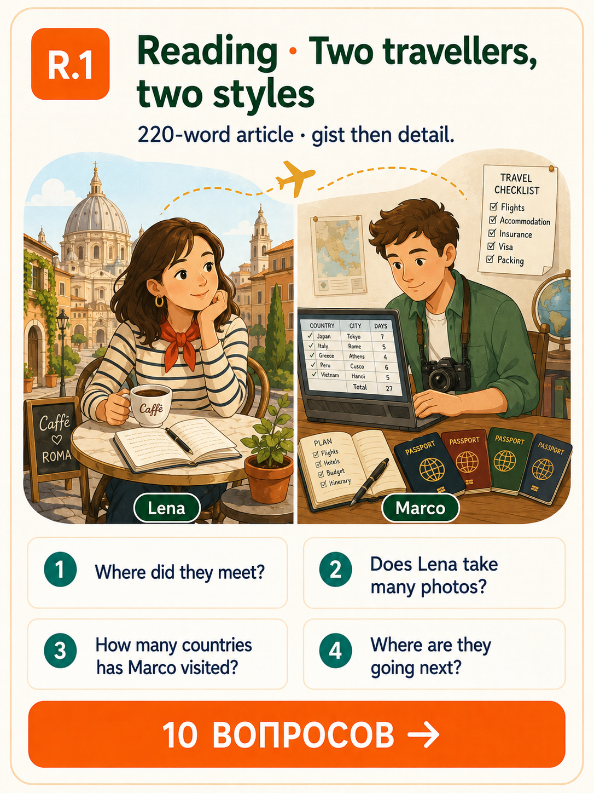
Read the article twice: first for gist (who is who?), then for detail. Only then answer the 10 mixed questions below — Yes/No · Wh · Subject/Object · Alternative · Tag · Indirect.
Two travellers, two styles
Lena and Marco met at a hostel in Rome three years ago. Lena is a slow traveller: she books one place, stays for two weeks, learns the names of the café owners on her street, and rarely takes photos. «I want to feel the city, not to collect it,» she says.
Marco is the opposite. He is a checklist traveller: seven countries a month, two hundred photos a day, and a spreadsheet where he ranks every restaurant. He has already visited forty-three countries; Lena has visited eleven.
Last summer they decided to travel together to Iceland. It was a disaster and a revelation at the same time. On day one, Marco wanted to drive around the whole ring road; Lena wanted to sit by a single glacier and read. On day three, they compromised: they moved once every two days and cooked their own meals in each hostel.
By the end of the trip, Lena had taken more photos than usual, and Marco had learnt three Icelandic words. «I think we changed each other a little,» Lena says. «Not enough to swap styles — but enough to understand.»
They're planning a second trip. This time, Georgia. Marco is already reading about Tbilisi. Lena is looking for a small village with a river.
Choose the answer that matches the article. Notice which question types you meet.
Now flip the exercise — write 3 of your OWN questions about Lena and Marco. Use different types. Type them below.
Model: Have you ever travelled with someone whose style is opposite to yours? / Would you rather be a slow traveller or a checklist traveller?
Your Q1 (Yes/No):
Your Q2 (Wh + tense):
Your Q3 (Indirect / polite):
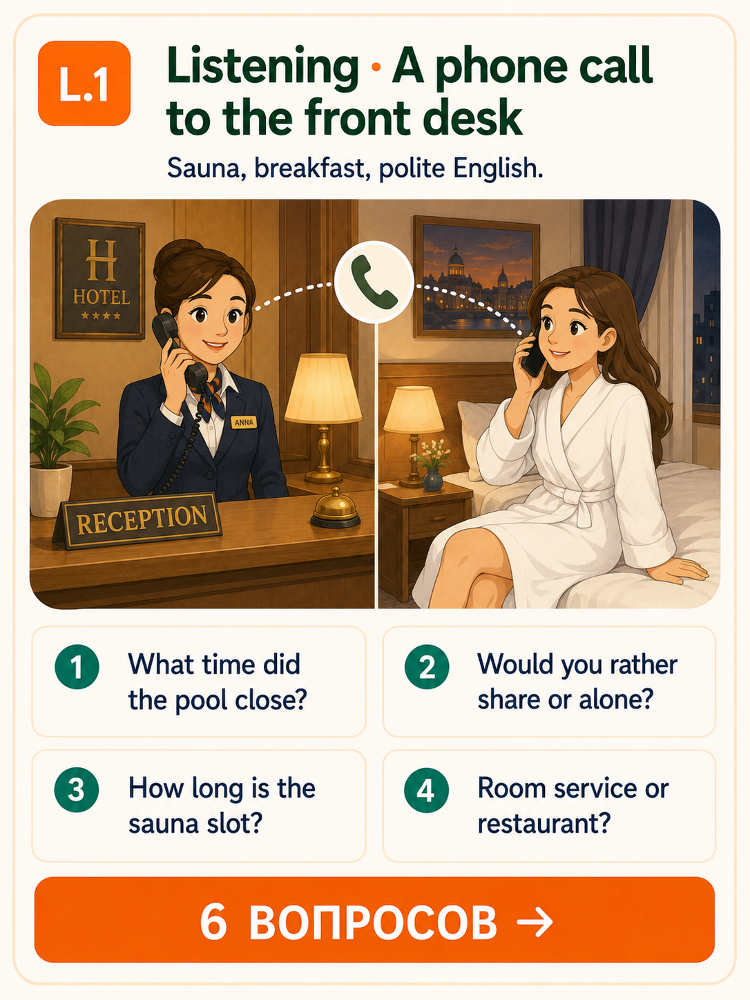
A short evening dialogue between a hotel guest (Katya, room 304) and the front-desk receptionist (Anna). Click ▶ to play the whole scene twice — once for gist, once for detail.
Tap ▶ for the whole scene. Then answer 6 questions. Turn on subtitles only after your first try.
Anna: Front desk. Good evening, this is Anna, how can I help you?
Katya: Hi Anna. This is Katya from room 304. I'm sorry to call so late. I was wondering if the pool is still open.
Anna: Oh, the pool closed at nine, I'm afraid. But the sauna is open until eleven. Would you like me to book a slot for you?
Katya: That would be great, thank you. Could I come down in about twenty minutes?
Anna: Of course. Would you rather share the sauna or have it to yourself?
Katya: By myself, please, if possible.
Anna: Absolutely. I'll block the slot from 9:40 to 10:10. Is there anything else?
Katya: Actually, yes. Do you know if breakfast is served in the room or only in the restaurant tomorrow?
Anna: Both are available. I'll send you the menu right now.
Katya: Perfect. Thank you so much. Have a great evening.
Anna: You too, Katya. Good night.
Play only Anna's lines (▶). Say Katya's lines out loud. Feel how polite the whole call sounds — every request wrapped in Could / Would / I was wondering.
Every B1 learner hits the same five walls with questions. Learn to notice them — you'll edit yourself in real time.
One pass, no clues. Every item mixes tenses and question types. Aim for 25+ out of 30.
You're checking in for a flight to Athens. Read the whole scene once, then fill each blank with the right question word or auxiliary. Word bank below.
Bank: Do · Does · Did · Is · Are · Have · Where · When · How much · How many · Could · Would. Case-insensitive.
Agent: Good morning. ___[1] I have your passport, please?
You: Sure, here it is.
Agent: Thank you. ___[2] you flying to Athens today?
You: Yes, that's right.
Agent: ___[3] bags ___[4] you got with you?
You: One suitcase to check, and this small backpack for the cabin.
Agent: Great. ___[5] you like an aisle seat or a window seat?
You: Window, please. ___[6] many hours ___[7] the flight?
Agent: Just over three hours. ___[8] you already checked in online?
You: No, not yet.
Agent: No problem. ___[9] the flight boards at 10:15 from Gate B4. ___[10] you know where the security check is?
You: ___[11] is it, exactly?
Agent: Go straight along this corridor, then turn left. ___[12] you have any other questions?
Type your answers:
1. 2. 3. 4. 5. 6. 7. 8. 9. 10. 11. 12.Choose ANY 8 items from Sections B, A, W above. Say each aloud twice: once at natural speed, once slowly with clear intonation. Record yourself if you can — listen for the auxiliary being clear and the pitch pattern natural.
Green ticks = your wins. Red crosses = points to look at again before next Sunday. Send the whole workbook via the 📤 Homework tab or the ＋ button in the lexicon.